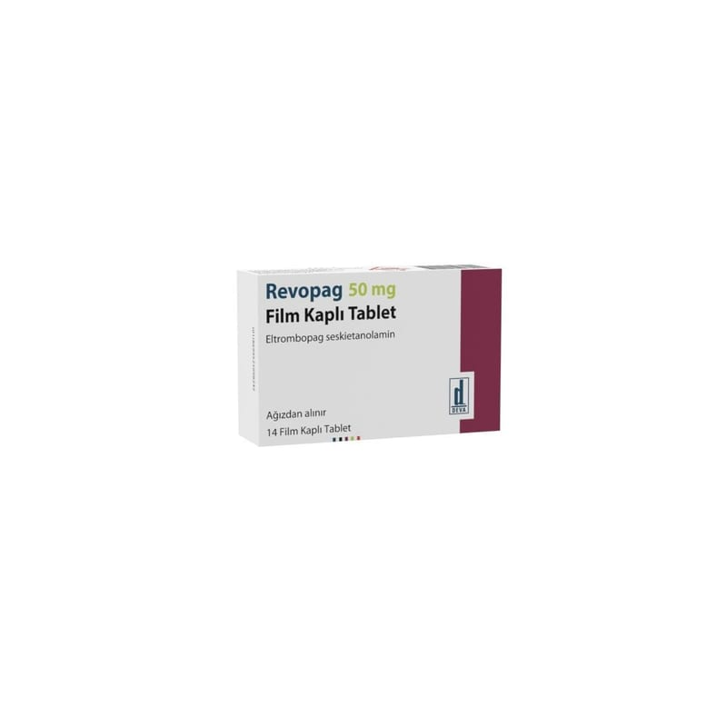

Revopag 50 mg Film Kaplı Tablet , 28 Adet

Ne için kullanılır
KT · Bölüm 1REVOPAG etkin madde olarak eltrombopag içerir.
REVOPAG trombopoietin reseptör agonistleri adı verilen bir ilaç grubuna aittir. REVOPAG kanınızdaki pıhtılaşmayı sağlayan kan hücresi (trombosit/kan pulcuğu) sayısının artırılmasına yardımcı olmak için kullanılır. Trombositler (kan pulcuğu) kanamanın azaltılması veya önlenmesine yardımcı olan kan hücreleridir.
REVOPAG kahverengi, yuvarlak, bikonveks, bir tarafında 50 kazılı film kaplı tablettir. Her kutuda 14 veya 28 adet film kaplı tablet bulunmaktadır.
REVOPAG, kronik idiyopatik trombositopenik purpura (ITP: düşük kan trombosit sayımının neden olduğu bir kanama hastalığı) olan ve diğer tedavilere dirençli (örneğin kortizon (steroid) tedavisi ve bağışıklık sistemini baskılayan (immünsüpresif)) yetişkin hastaların trombosit sayısının artırılmasında kullanılır.
REVOPAG, tanıdan itibaren 6 ay veya daha uzun süren ve diğer tedavilere dirençli (örneğin kortizon (steroid) tedavisi ve bağışıklık sistemini baskılayan (immünsüpresif)), kronik ITP olan ve 1 yaş ve üstü pediyatrik (çocuk) hastaların trombosit sayısının artırılmasında kullanılır.
ITP’ye düşük kan trombosit sayısı (trombositopeni) neden olur. ITP hastalarında kanama riski yüksektir ve peteşi (deri altında iğne ucu büyüklüğünde düz yuvarlak kırmızı lekeler), çürüme, burun kanamaları, diş eti kanamaları ve kesik veya yaralanma meydana geldiğinde kanamanın kontrol edilememesi gibi belirtiler görülebilir.
REVOPAG, hepatit C virüsü (HCV) enfeksiyonu olan yetişkinlerde, interferon tedavisi sırasında yan etkilerle ilgili sorunlar yaşamışlarsa, düşük trombosit sayısını (trombositopeni) tedavi etmek için de kullanılabilir. Hepatit C’li birçok kişide, sadece hastalığın bir sonucu olarak değil, aynı zamanda tedavide kullanılan bazı antiviral ilaçlar nedeniyle de trombosit sayısı düşüktür. REVOPAG kullanmak, tam bir antiviral ilaç (peginterferon ve ribavirin) tedavisini tamamlamanızı kolaylaştırabilir.